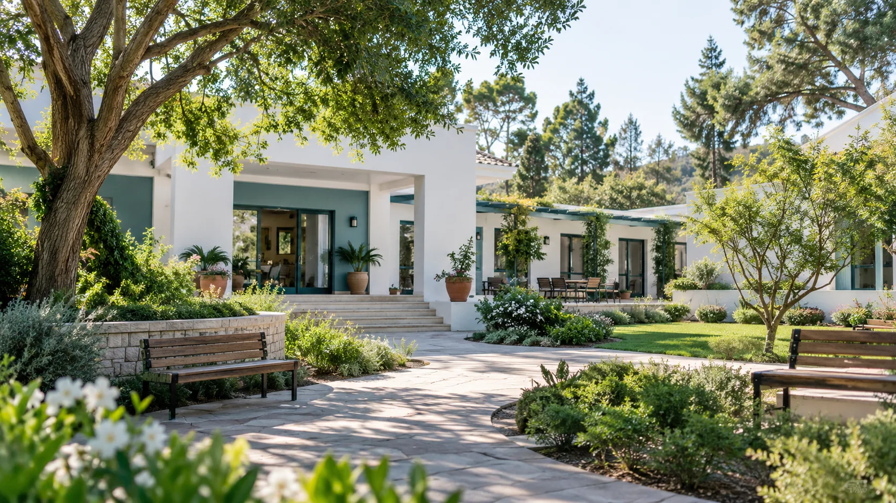
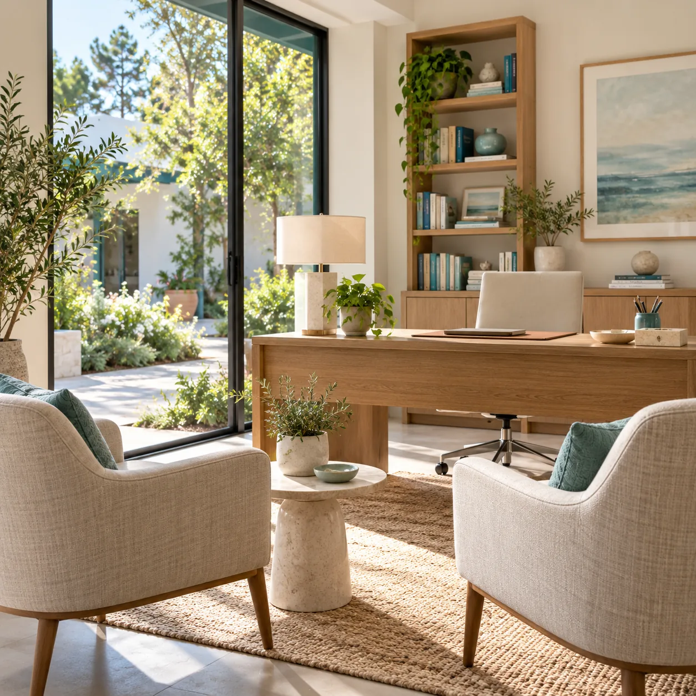
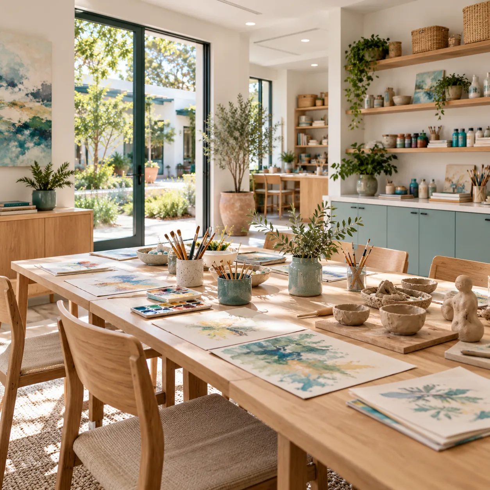
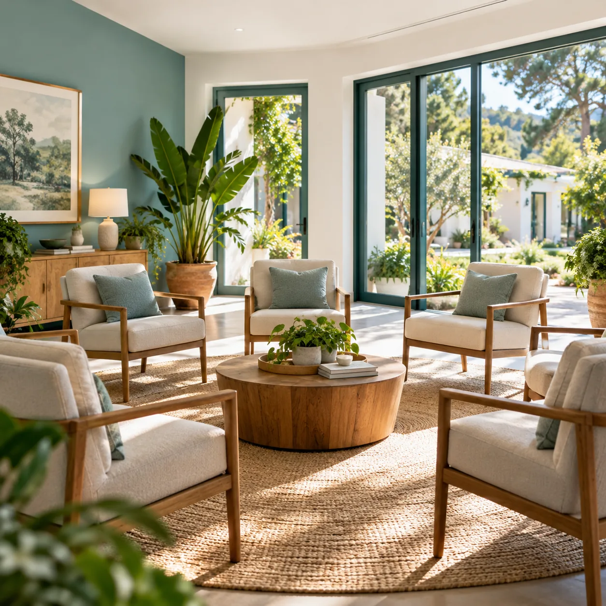
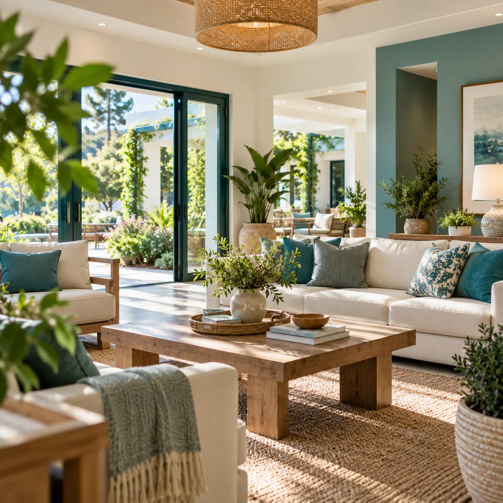
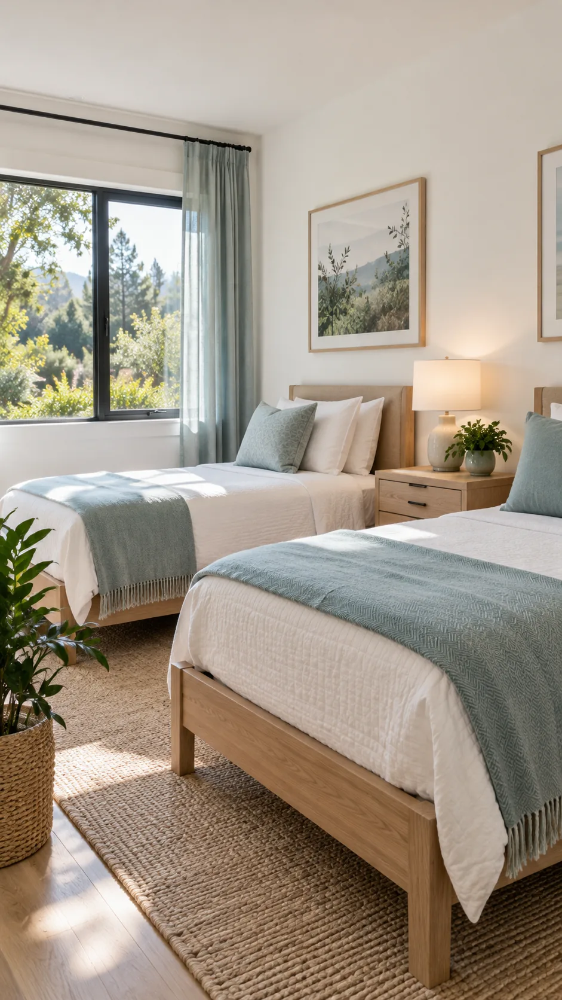

Si necesitás ayuda vos
Pedir ayuda es el primer paso, y no tenés que darlo solo. Escribinos y conversamos con total reserva.
Escribir por WhatsApp
Comunidad terapéutica · Programa Minnesota
Psiquiatría, psicología, arteterapia, constelaciones familiares y grupos de autoayuda, en un lugar con luz y jardines para empezar de nuevo.
Pedir ayuda es el primer paso, y no tenés que darlo solo. Escribinos y conversamos con total reserva.
Escribir por WhatsAppAcompañar a alguien con una adicción también duele. Te orientamos sobre cómo dar el paso y cómo es la internación.
Consultar por un familiarLa internación reúne en un mismo lugar el trabajo de distintos profesionales y la vida en comunidad.

Un equipo de salud mental acompaña el tratamiento: evaluación, seguimiento y espacios individuales para trabajar lo que sostiene el consumo.

El arte como otra forma de decir lo que cuesta poner en palabras. Pintura, modelado y trabajo con las manos, en una sala propia.

Una mirada sobre los vínculos y la historia familiar, para entender el lugar que ocupa la adicción y empezar a ordenarlo.

Grupos basados en los principios de Narcóticos Anónimos, donde compartir la experiencia ayuda a sostener la recuperación.

Un operador socioterapeuta acompaña la vida cotidiana en la comunidad: los horarios, las tareas compartidas y cada momento difícil.
Una casa con jardines, habitaciones luminosas y salas pensadas para cada parte del tratamiento. Tocá una foto para verla grande.
Programa Minnesota · Narcóticos Anónimos
Renacer desde adentro trabaja con el programa Minnesota, un modelo que entiende la adicción como una enfermedad que se puede tratar y que combina un equipo interdisciplinario con el trabajo de los doce pasos.
La comunidad se basa en los valores y principios de Narcóticos Anónimos: la honestidad, la ayuda mutua y el compromiso con la recuperación.
Nadie se recupera solo. Por eso acá el proceso se hace en comunidad, un día a la vez.
Convivir con otros que atraviesan lo mismo ayuda a sostener el cambio.
Psiquiatría, psicología, arteterapia y constelaciones familiares, trabajando juntos.
Grupos de autoayuda basados en los principios de Narcóticos Anónimos.
Cuatro pasos para empezar, a tu ritmo y con alguien que te guía en cada uno.
Por WhatsApp o por el formulario, vos o alguien de tu familia. La consulta es confidencial.
Escuchamos la situación y te contamos cómo trabajamos, sin compromiso.
Junto al equipo vemos si la internación es la mejor opción para este momento.
La persona ingresa a la comunidad y comienza su proceso, acompañada.
Dar el primer paso cuesta. Podés escribirnos aunque todavía tengas dudas.
Hablar con la comunidadSi tu duda no está acá, escribinos: te respondemos con tiempo y sin apuro.
Sí. Lo que nos cuentes por WhatsApp o en el formulario queda entre vos y el equipo.
Personas con problemas de consumo que quieran empezar un tratamiento. En la primera conversación evaluamos juntos cada situación.
Depende de cada persona y de cómo avanza su proceso. El equipo lo define y lo va revisando durante el tratamiento.
Sí. La familia es parte de la recuperación, y las constelaciones familiares ayudan a trabajar los vínculos y a acompañar el proceso.
Internación, psiquiatría, psicología, arteterapia, constelaciones familiares y grupos de autoayuda, con el acompañamiento de un operador socioterapeuta.
Escribinos por WhatsApp y te contamos las opciones de ingreso para tu caso.
Podés consultar por vos o por alguien de tu familia. Te respondemos por WhatsApp o te llamamos, como prefieras.
La consulta es confidencial y sin compromiso.
Fachada y jardines1 de 6